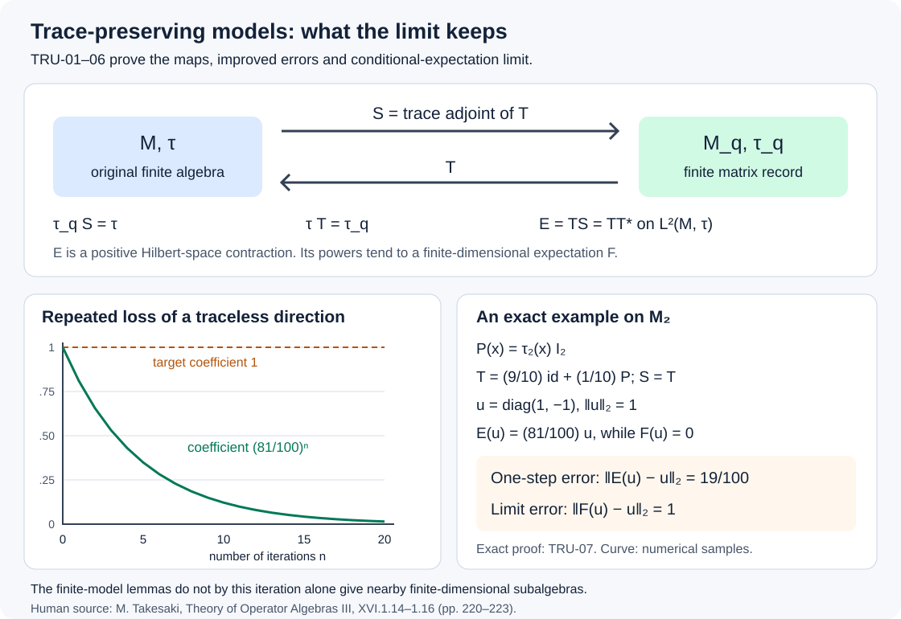

Trace-preserving models and unitary rounding
Finite completely positive models can preserve both traces exactly. Their trace adjoints give a useful positive operator on the trace Hilbert space, and a polar decomposition can turn finite contractions into unitaries. We prove these statements with explicit error budgets. We also examine what happens when the resulting finite-rank map is iterated: its limit is a conditional expectation onto a finite-dimensional algebra, but that limit can destroy the approximation one started with.
The finite-model theorems below apply to every injective von Neumann algebra with a faithful normal tracial state. Factoriality and separability are unnecessary here. The two rounding arguments need even less: their target can be any unital C*-algebra with any state.
Normal unital models from the exact finite injectivity input
Let \(M\) be a von Neumann algebra with faithful normal tracial state \(\tau\). Write
\[ \|x\|_2=\tau(x^*x)^{1/2},\qquad \tau_m=\operatorname{Tr}_m/m. \tag{TRU.1} \]The trace Hilbert space is the completion for this norm, with inner product linear in the second variable. The completion, finite trace duality, matrix positivity and Hilbert adjoints are proved in Densities, pairings and completely positive maps and The finite-tracial-algebra theorem in full generality and their exact earlier inputs.
We use one nontrivial injectivity input: Theorem 5.1, the explicit finite matrix construction, already included in the complete injectivity proof map. For injective \(M\), it constructs normal completely positive contractions \(A_i:M\to M_{m_i}\) and completely positive contractions \(B_i:M_{m_i}\to M\) such that
\[ P_i=B_iA_i\longrightarrow\operatorname{id}_M \quad\hbox{pointwise ultraweakly}. \tag{TRU.2} \]Its proof constructs the matrix maps from finite product vectors and controls their marginal by a spectral cutoff. It applies to the specified faithful trace without separability or a factor assumption; it does not use the later AFD conclusion.
Here are the topology and unit corrections needed to use that input. A subunital cp map \(P\) satisfies Schwarz: apply its size-two amplification to \(\binom{x^*}{1}(x,1)\), add \(1-P(1)\) to the lower-right corner, and sandwich by \(\binom{1}{-P(x)}\). This gives \(P(x)^*P(x)\le P(x^*x)\). Hence
\[ \|P_i(x)-x\|_2^2 \le \tau(P_i(x^*x)) -2\operatorname{Re}\tau(x^*P_i(x))+\tau(x^*x) \longrightarrow0. \tag{TRU.3} \]Both tests on the right are normal, so (TRU.2) applies.
Put \(a_i=A_i(1)\), \(b_i=B_i(1)\), and fill the unit defects:
\[ \begin{aligned} A_i^u(x)&=A_i(x)+\tau(x)(1-a_i),\\ B_i^u(y)&=B_i(y)+\tau_{m_i}(y)(1-b_i). \end{aligned} \tag{TRU.4} \]Each correction is cp: a positive scalar functional is completely positive, and its positive matrix of values tensored with a positive operator is positive. The two maps now send the unit to the unit; \(A_i^u\) is normal.
Let \(c_i=1-P_i(1)\). Positivity gives
\[ 0\le B_i(1-a_i)\le c_i,\qquad 0\le1-b_i\le c_i,\qquad 0\le c_i\le1. \]If \(0\le d\le c_i\), then \(\|d\|_2^2\le\tau(d)\le\tau(c_i)\), since \(d^2\le d\). Expanding (TRU.4) and using contractivity of the scalar states and \(A_i^u\) yields
\[ \|B_i^uA_i^u(x)-P_i(x)\|_2 \le2\|x\|\sqrt{\tau(c_i)}\longrightarrow0. \tag{TRU.5} \]Indeed the difference is \(\tau(x)B_i(1-a_i)+\tau_{m_i}(A_i^u(x))(1-b_i)\). The limit follows by testing (TRU.2) at the unit. Thus normal ucp recording and ucp reconstruction maps approximate any prescribed finite list in \(2\)-norm. The directed index is a net throughout.
Exact matrix trace on the reconstruction side
Theorem. If \(M\) is injective, then for every finite list of unitaries \(u_k\in M\) and every \(\varepsilon>0\), there are a ucp map \(T:M_q\to M\) and contractions \(y_k\in M_q\) such that
\[ \tau T=\tau_q,\qquad \|T(y_k)-u_k\|_2<\varepsilon. \tag{TRU.6} \]Proof. Fix \(0<\eta<1\). By TRU-01 choose normal ucp \(A:M\to M_m\) and ucp \(B:M_m\to M\) with \(\|BA(u_k)-u_k\|_2<\eta/2\). Set \(x_k=A(u_k)\), which are contractions. Apply Rationalizing the actual completely positive map to obtain ucp \(B'\) satisfying \(\|B'-B\|<\eta/2\), whose state \(\varphi=\tau B'\) has a strictly positive rational density \(h\) relative to \(\tau_m\). Both errors have now been included:
\[ d_k:=\|B'(x_k)-u_k\|_2<\eta. \tag{TRU.7} \]For a contraction \(x\), the weighted Hilbert estimate in WAD-07 gives
\[ \begin{aligned} \|[h^{1/2},x]\|_{2,\tau_m}^2 &=\varphi(x^*x)+\varphi(xx^*) -2\tau_m(h^{1/2}x^*h^{1/2}x)\\ &\le 2-2\|B'(x)\|_2^2. \end{aligned} \tag{TRU.8} \]Expanding the square proves the equality: cyclicity makes the two cross terms equal, and their common value is \(\|h^{1/4}xh^{1/4}\|_{2,\tau_m}^2\). For \(x=x_k\), contractivity and the reverse triangle inequality give
\[ 1\ge\|B'(x_k)\|_2\ge1-d_k>1-\eta, \qquad \|[h^{1/2},x_k]\|_{2,\tau_m}^2<4\eta-2\eta^2. \tag{TRU.9} \]Take the explicit rational record pair \(\mathcal R:M_m\to M_q\), \(\mathcal L:M_q\to M_m\) from The state and the record space through The best commutator coefficient for each density. Its identities are
\[ \tau_q\mathcal R=\varphi,\qquad \varphi\mathcal L=\tau_q. \]Its sharp error coefficient is \(\sqrt{\beta(h)}\), where \(0\le\beta(h)<1\). For every \(a\in M_m\), Schwarz and target traciality give
\[ \|B'(a)\|_2^2 \le\tfrac12\varphi(a^*a+aa^*) =\bigl(\|a\|_\varphi^\#\bigr)^2. \tag{TRU.10} \]Set \(T=B'\mathcal L\) and \(y_k=\mathcal R(x_k)\). The trace identity is exact, the \(y_k\)'s remain contractions, and
\[ \begin{aligned} \|T(y_k)-u_k\|_2 &<\eta+\sqrt{\beta(h)(4\eta-2\eta^2)}\\ &\le\eta+2\sqrt\eta. \end{aligned} \tag{TRU.11} \]The first line also covers scalar \(h\), when \(\beta(h)=0\) and the return map is the identity. Choosing \(\eta=\min(\varepsilon/4,\varepsilon^2/64,1/4)\) makes the last line at most \(\varepsilon/2<\varepsilon\). \(\square\)
The density-dependent estimate is useful after \(h\) has been constructed. The simpler last bound chooses the initial budget without knowing that density.
The trace adjoint and a better two-sided error estimate
Let \(T:M_q\to M\) be ucp with \(\tau T=\tau_q\). Its ordinary trace adjoint \(S:M\to M_q\) is characterized by
\[ \tau_q(S(a)^*x)=\tau(a^*T(x)). \tag{TRU.12} \]WAD-07 constructs this map, proves complete positivity and normality, and proves uniqueness. Here its density is \(I_q\), so \(S(1)=1\). Pairing with \(1\) gives \(\tau_qS=\tau\). Schwarz then makes both maps contractions on their trace Hilbert spaces.
Define \(E=TS\). On \(L^2(M,\tau)\), equation (TRU.12) says \(S=T^*\), hence
\[ E=TT^*,\qquad 0\le E\le I,\qquad \langle a,Ea\rangle=\|S(a)\|_{2,\tau_q}^2. \tag{TRU.13} \]The order here is Hilbert-operator order. Separately, \(E\) is a normal ucp, trace-preserving map on \(M\) with finite-dimensional range.
There is a useful exact identity and bound:
\[ \begin{aligned} \|a-Ea\|_2^2 &=\|a\|_2^2-2\|S(a)\|_{2,\tau_q}^2+\|TS(a)\|_2^2\\ &\le\|a\|_2^2-\|S(a)\|_{2,\tau_q}^2. \end{aligned} \tag{TRU.14} \]This follows by expanding the square and using the \(L^2\) contraction property of \(T\).
Suppose \(u\) is unitary, \(y\in M_q\) is a contraction, and \(\|T(y)-u\|_2<\eta<1\). The complex pairing itself lies near one:
\[ \left|\tau_q(S(u)^*y)-1\right| =\left|\tau(u^*(T(y)-u))\right|<\eta. \tag{TRU.15} \]Cauchy–Schwarz and \(\|y\|_{2,\tau_q}\le1\) imply \(\|S(u)\|_{2,\tau_q}>1-\eta\). Substitution in (TRU.14) gives
\[ \|TS(u)-u\|_2<\sqrt{\,2\eta-\eta^2\,}. \tag{TRU.16} \]In particular, the additional \(+\eta\) from separately estimating \(S(u)-y\) is unnecessary.
Applying TRU-02 with sufficiently small \(\eta\) proves: for every finite list \(a_1,\ldots,a_N\in M\) and \(\varepsilon>0\), there are normal ucp \(S:M\to M_q\) and ucp \(T:M_q\to M\) such that
\[ \tau_qS=\tau,\qquad \tau T=\tau_q,\qquad \|TS(a_j)-a_j\|_2<\varepsilon. \tag{TRU.17} \]Here is the reduction from unitaries to general elements. A selfadjoint contraction \(b\) is \((v+v^*)/2\), where \(v=b+i(1-b^2)^{1/2}\) is unitary; multiplication and functional calculus verify \(v^*v=vv^*=1\). Apply this to the normalized real and imaginary parts of a nonzero \(a\). It expresses \(a\) as four unitary terms with sum of absolute coefficients \(2\|a\|\). A finite union of these unitary lists and the triangle inequality give (TRU.17). Choose their error below \(\varepsilon/(2\max_j\|a_j\|)\). If all \(a_j=0\), use \(S=\tau\) and \(T(\lambda)=\lambda1\).
Polar rounding uses the pullback state
The following argument does not require a tracial target. Let \(A\) be a unital C*-algebra, \(\omega\) any state, \(T:M_m\to A\) ucp, \(u\in A\) unitary, and \(y\in M_m\) a contraction. Write
\[ \|z\|_{2,\omega}=\omega(z^*z)^{1/2},\qquad \varphi=\omega T,\qquad d=\|T(y)-u\|_{2,\omega}. \]These are seminorms if the states are not faithful. Cauchy–Schwarz for a positive functional, obtained by applying positivity to \((a+tb)^*(a+tb)\) for scalar \(t\), still proves their triangle and reverse triangle inequalities.
Extend the polar partial isometry of \(y\) to a unitary \(v\), so \(y=v|y|\). In a square matrix algebra this extension always exists: initial and final projections have equal rank, so their orthogonal complements have equal dimension; add any isometric bijection between those complements. The added part annihilates \(|y|\).
Schwarz and the scalar inequality \((1-t)^2\le1-t^2\) on \([0,1]\) give
\[ \begin{aligned} \|T(v-y)\|_{2,\omega}^2 &\le\varphi((v-y)^*(v-y))\\ &=\varphi((1-|y|)^2)\\ &\le1-\varphi(y^*y)\\ &\le1-\|T(y)\|_{2,\omega}^2 \le2d. \end{aligned} \tag{TRU.18} \]For the last step use \(\|T(y)\|_{2,\omega}\le1\) and \(1-\|T(y)\|_{2,\omega}\le d\). Consequently
\[ \|T(v)-u\|_{2,\omega}\le d+\sqrt{2d}. \tag{TRU.19} \]For \(d<\eta\), this is strictly below \(\eta+\sqrt{2\eta}\). The proof uses the actual state \(\varphi\), which need not be the normalized matrix trace.
For a concrete diagnostic, take \(T:M_2\to M_2\), \(T(x)=x_{11}I_2\), and \(\omega=\tau_2\). For \(y=e_{11}\),
\[ \|T(y)\|_{2,\tau_2}=1,\qquad \|y\|_{2,\tau_2}=1/\sqrt2,\qquad \|y\|_{2,\varphi}=1. \tag{TRU.20} \]Thus the input matrix trace would make the contraction step false. The pullback state gives the correct inequality and proves the rounding theorem at its full stated generality.
Rounding the dual functional improves the bound
There is another constructive choice of unitary with a better bound. Keep the arbitrary \(A,\omega,T,u,y\) of TRU-04. Define a linear functional on \(M_m\) by
\[ \ell(z)=\omega(u^*T(z)). \]Finite matrix trace duality gives a unique \(b\in M_m\) with \(\ell(z)=\tau_m(b^*z)\). Complete the polar decomposition of \(b\) to a unitary \(v\), so \(b=v|b|\). Then
\[ \ell(v)=\tau_m(|b|),\qquad \operatorname{Re}\ell(y)\le\tau_m(|b|). \tag{TRU.21} \]To prove the inequality, diagonalize \(|b|\) and use cyclicity: \(\ell(y)=\tau_m(|b|v^*y)\). Each diagonal entry of the contraction \(v^*y\) has real part at most one; multiply by the nonnegative eigenvalues of \(|b|\) and sum. Also \(\tau_m(|b|)\le1\), since \(|\ell(v)|\le\|T(v)\|\le1\).
By Schwarz for the state,
\[ |1-\ell(y)|\le d. \]The selected unitary therefore satisfies
\[ \begin{aligned} \|T(v)-u\|_{2,\omega}^2 &\le2-2\operatorname{Re}\ell(v)\\ &=2\bigl(1-\tau_m(|b|)\bigr) \le2d. \end{aligned} \tag{TRU.22} \]In particular, \(d<\eta\) gives the improved bound \(\sqrt{2\eta}\). This unitary maximizes the real pairing \(\operatorname{Re}\ell\) over all contractions. We do not assert that it minimizes the distance \(\|T(v)-u\|_{2,\omega}\), since the norm of \(T(v)\) also depends on \(v\).
When \(T\) preserves the traces, (TRU.12) identifies \(b=S(u)\). Thus its polar unitary can be computed directly from the trace adjoint. Combining this rounding with TRU-02 proves the full finite-list conclusion: any finite list of unitaries in injective faithfully tracial \(M\) is approximated in \(2\)-norm by \(T(v_k)\), with one trace-preserving ucp \(T:M_q\to M\) and unitary \(v_k\in M_q\). No assertion that \(T\) is multiplicative has been used.
The maximizing unitary need not minimize the distance. On \(M_2\), put
\[ X=\begin{pmatrix}0&1\\1&0\end{pmatrix},\quad Z=\operatorname{diag}(1,-1),\quad u=(X+Z)/\sqrt2,\quad \omega(a)=\tau_2((I+X/2)a). \]The density has eigenvalues \(1/2,3/2\), so this is a faithful state. Let \(T(a)=(a+ZaZ)/2\), the ucp map keeping only diagonal entries. The anticommutation of \(X,Z\) proves that \(u\) is unitary. Direct matrix multiplication gives
\[ b=\operatorname{diag}\left(\frac3{2\sqrt2},-\frac1{2\sqrt2}\right), \qquad v=Z. \]This polar unitary has \(\ell(v)=1/\sqrt2\). The competing unitary \(w=u\) has \(T(w)=Z/\sqrt2\) and \(\ell(w)=1/2\). Nevertheless
\[ \begin{aligned} \|T(v)-u\|_{2,\omega}^2=2-\sqrt2 &>\frac12=\|T(w)-u\|_{2,\omega}^2. \end{aligned} \]Thus maximizing the real pairing is exactly the operation proved in (TRU.21); the stronger nearest-image assertion would be false.
The finite-rank map has a conditional-expectation limit
For any trace-preserving \(T:M_q\to M\) and its adjoint \(S\), consider \(E=TS\) from TRU-03. Its range on \(L^2(M,\tau)\) is finite-dimensional and consists of bounded elements of \(M\): it is contained in \(T(M_q)\). Because \(E\) is selfadjoint and positive, its kernel is the orthogonal complement of its range. Finite-dimensional diagonalization on that range gives an orthonormal basis \(a_j\in M\) with eigenvalues \(0<\lambda_j\le1\). For \(n\ge1\),
\[ E^n(x)=\sum_j\lambda_j^n\tau(a_j^*x)a_j. \tag{TRU.23} \]The finite diagonalization theorem was proved among the WAD-01 inputs. No infinite-dimensional spectral theorem is needed here.
Let
\[ F(x)=\sum_{\lambda_j=1}\tau(a_j^*x)a_j. \tag{TRU.24} \]This is the trace Hilbert orthogonal projection onto the fixed space of \(E\). Each coordinate functional is normal, so \(F\) is normal. If there are eigenvalues strictly below one, put \(\rho=\max_{\lambda_j<1}\lambda_j<1\) and \(C=\sum_{\lambda_j<1}\|a_j\|\). Cauchy–Schwarz gives the operator-norm estimate
\[ \|E^n(x)-F(x)\| \le C\rho^n\|x\|_2 \le C\rho^n\|x\|,\qquad n\ge1. \tag{TRU.25} \]If that eigenvalue set is empty, \(E^n=F\) for every \(n\ge1\). Thus the powers converge even in norm as bounded maps \(M\to M\).
Every \(E^n\) is ucp and trace-preserving. Entrywise norm convergence at each finite matrix size and closedness of the positive cone make \(F\) ucp; it is also unital, trace-preserving and idempotent.
Its range
\[ N=\{x\in M:E(x)=x\} \]is a finite-dimensional unital *-subalgebra. It is a linear selfadjoint space. If \(x\in N\), Schwarz gives \(E(x^*x)-x^*x\ge0\). Its trace is zero, so faithfulness gives \(E(x^*x)=x^*x\). Apply this to \(x+y\) and \(x+iy\) for \(x,y\in N\); expansion and subtraction show \(x^*y\in N\). Hence it is an algebra.
Finally \(F\) is \(N\)-bimodular. For \(a,b,c\in N\), trace orthogonality gives
\[ \tau(c^*F(axb)) =\tau(c^*axb) =\tau(c^*aF(x)b). \]For the second equality, move \(b\) around the trace and use the test element \(a^*cb^*\in N\) in the projection identity. Both \(F(axb)\) and \(aF(x)b\) belong to \(N\), so their equality follows by testing their difference against itself. This proves that \(F\) is a normal trace-preserving conditional expectation onto \(N\).
The constants and fixed algebra depend on the chosen model. In particular, (TRU.25) does not say that \(F\) preserves the approximation quality of \(E\).
Why iteration does not finish the AFD proof
An exact two-dimensional example shows the remaining issue. Let
\[ P(x)=\tau_2(x)I_2,\qquad T_\alpha=\alpha\,\operatorname{id}+(1-\alpha)P,\qquad 0<\alpha<1. \tag{TRU.26} \]The state map \(P\) is cp by the scalar matrix test used in TRU-01. Thus \(T_\alpha\) is ucp and trace-preserving. It is selfadjoint on \(L^2(M_2,\tau_2)\), since \(P\) is the orthogonal projection onto the scalar matrices. Therefore \(S_\alpha=T_\alpha\) and
\[ E_\alpha=T_\alpha^2 =\alpha^2\operatorname{id}+(1-\alpha^2)P,\qquad E_\alpha^n=P+\alpha^{2n}(\operatorname{id}-P). \tag{TRU.27} \]Its fixed algebra is \(\mathbb CI_2\), and its conditional-expectation limit is \(F_\alpha=P\).
For \(u=\operatorname{diag}(1,-1)\), one has \(P(u)=0\), \(\|u\|_2=1\), and
\[ \|E_\alpha(u)-u\|_2=1-\alpha^2,\qquad \|F_\alpha(u)-u\|_2=1. \tag{TRU.28} \]As \(\alpha\uparrow1\), even \(\|E_\alpha-\operatorname{id}\|\le2(1-\alpha^2)\to0\) in the norm of bounded maps. Nevertheless every \(F_\alpha\) loses the entire traceless direction. At \(\alpha=1\), the fixed algebra jumps to \(M_2\).

The numerical curve samples the exact coefficient \((81/100)^n\), corresponding to \(\alpha=9/10\). Its limit removes the traceless direction. Equations (TRU.27–28) prove the behavior; TRU-03 and TRU-06 identify the adjoint and conditional expectation. The example concerns a proposed approximation procedure: \(M_2\) itself is already finite-dimensional.
Consequently trace-preserving finite models and their finite-dimensional fixed algebras do not, by this iteration argument alone, provide subalgebras close to the prescribed finite list. The later coupling and perturbation arguments must supply that extra approximation property. The AFD conclusion is not being assumed or claimed here.
Full source correspondence and three proof repairs
The human source is M. Takesaki, Theory of Operator Algebras III, Lemmas XVI.1.14–1.16, printed pages 220–223. The source works in a separable injective type \(\mathrm{II}_1\) factor. TRU-01–03 retain all conclusions of the first two lemmas for arbitrary injective algebras with a faithful normal tracial state. TRU-04 proves the third lemma for any ucp map, without adding a trace-preservation assumption; TRU-05 improves its bound and permits an arbitrary target state.
The reconstruction budget, page 221. The source first obtains \(\|T_2(x_k)-u_k\|_2<2\delta\), then bounds four times that error by \(4\delta\). The preceding estimate only supplies \(8\delta\). Keeping its original two stage budgets gives the valid final bound \(2\delta+2\sqrt{2\delta}\). Our proof assigns \(\eta/2\) to each stage and uses their combined budget \(\eta\) throughout (TRU.7–11).
The issue can be checked with actual ucp maps. On \(M_2\), take \(u=\operatorname{diag}(1,-1)\), \(P(x)=\tau_2(x)I_2\),
\[ A=\tfrac{37}{40}\operatorname{id}+\tfrac3{40}P,\qquad B=\operatorname{id},\qquad B'=\tfrac{29}{30}\operatorname{id}+\tfrac1{30}P. \]For \(\delta=1/10\), \(\|BA(u)-u\|_2=3/40<\delta\) and \(\|B'-B\|\le2/30<\delta\). The new density is \(I_2\), already strictly positive and rational, but
\[ \|B'A(u)-u\|_2=\frac{127}{1200}>\frac1{10}. \]Thus the two admissible stage errors do not imply that their composite error is below \(\delta\).
The complex pairing, page 222. The displayed lower bound \(|\tau_q(S(u)y^*)|>1-\delta\) does not by itself imply a lower bound on its real part. For example \(z=-1\) has \(|z|=1\) and \(\operatorname{Re}z=-1\). The preceding approximation actually gives the stronger disk estimate (TRU.15), or its complex conjugate, which supplies the required real part. This repairs the implication without changing the theorem. The Hilbert-operator identity then gives the stronger error estimate (TRU.16).
The state in polar rounding, page 223. The lemma assumes only that \(T\) is ucp. Its proof's \(L^2\) contraction step cannot use the normalized matrix trace unless \(\tau T=\tau_m\); (TRU.20) explicitly disproves that inference for a general ucp map. The pullback state \(\varphi=\tau T\) in (TRU.18) proves precisely the stated conclusion without the missing extra assumption. The theorem remains valid.
The earlier complete programme proofs are normal unit correction and trace-preserving finite models, Sections 2–4 and their solved checks and the exact faithful-trace input linked in TRU-01. Our additional conclusions are the adjoint energy bound, the dual-functional rounding bound and the fully proved fixed-algebra limit with its explicit obstruction to preserving approximation quality. Source Lemmas XVI.1.17–1.18 and the remaining subalgebra construction have separate proof obligations.